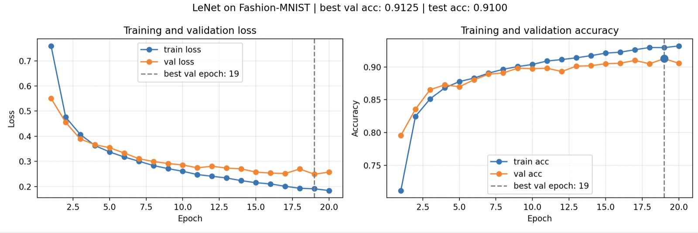

Day 2 学习笔记：经典 CNN——LeNet
学习目标：AI 方向求职
参考书：《动手学深度学习》PyTorch 版 LeNet 与 VGG 章节，PyTorch 官方文档 torch.nn.Conv2d、torch.nn.AvgPool2d、torch.nn.Flatten
本阶段重点：在 Day 1 学习笔记：卷积操作基础——shape 与参数量 已经理解输入 [N, Cin, H, W]、卷积权重 shape、输出 shape、参数量与参数共享的基础上，完成第一个可训练 CNN：LeNet。重点是把“卷积/池化 -> 展平 -> 分类器”翻译为 nn.Module，并使用规范的 train/validation/test 流程完成 Fashion-MNIST 实验。
今天主线：LeNet 数据流 -> 逐层 shape -> AvgPool2d/Flatten -> 最小训练与评估 -> CNN 与 MLP 的关系。本日不把 CNN accuracy 当作必然高于 MLP 的结论，而是优先核验数据集、划分和评估是否正确。
本笔记对应 PyTorch 暑期详细学习计划 中第 5 周 Day 2。
---
〇、今天完成了什么
1. 读懂了 LeNet 的两个部分：前半段卷积/池化提取特征，后半段展平/全连接输出 10 类 logits。
2. 能从 Fashion-MNIST 输入 [B, 1, 28, 28] 手动推导 LeNet 全部关键 shape，直到 [B, 10]。
3. 理解并实际使用 nn.AvgPool2d 与 nn.Flatten；知道池化不改变通道数，Flatten 保留 batch 维。
4. 手写 LeNet，随机 batch 前向验证得到 torch.Size([4, 10])，真实 DataLoader batch 前向验证得到 [128, 10]。
5. 完成 Fashion-MNIST 的 train/validation/test 划分、最佳 validation 模型保存和最终 test 评估。
6. 排查并纠正过一次数据集错误：异常接近 99% 的结果不能直接相信；在确认真实 Fashion-MNIST 后，得到有效结果 best val acc = 0.9125、test acc = 0.9100。
7. 为训练代码补充了按 epoch 记录 loss/accuracy 并用 Matplotlib 绘图的方案。
8. 完成选做阅读：理解 VGG 用多个 3×3 卷积堆叠后再池化；完整 VGG 训练与 MLP/LeNet 多轮对比后置。
9. 完成选做：在相同的 Fashion-MNIST 划分、batch size、epoch、优化器和学习率下，完成 MLP 与 LeNet 的 20 轮 accuracy 对比。
---
一、LeNet：先提取二维特征，再做分类
此前 MLP 的典型数据流是：
[B, 1, 28, 28]
-> Flatten
-> [B, 784]
-> Linear / ReLU / Linear
-> [B, 10]一开始展平后，MLP 不再保留像素的上下、左右邻接关系。
LeNet 则分为两个部分：
features：Conv -> ReLU -> Pool -> Conv -> ReLU -> Pool
classifier：Flatten -> Linear -> ReLU -> Linear -> ReLU -> Linear[B, 1, 28, 28]
-> 卷积和池化：在二维特征图中提取局部模式
-> Flatten：将已提取的特征图变成向量
-> 全连接层：综合特征并输出 10 个类别的 logits因此 Flatten 不放在最前面：卷积需要 [B, C, H, W] 的空间结构；先展平会丢失二维邻接关系，不能直接进行二维卷积。
与 Day 2 学习笔记：MLP 多层感知机与正则化 的关键区别是：MLP 对每个位置建立独立连接；CNN 在保留空间结构的前提下，利用局部连接和参数共享提取特征。
---
二、适配 Fashion-MNIST 的 LeNet 与 shape 推导
本日实际使用的是 ReLU 版本：
class LeNet(nn.Module):
def __init__(self):
super().__init__()
self.features = nn.Sequential(
nn.Conv2d(1, 6, kernel_size=5, padding=2),
nn.ReLU(),
nn.AvgPool2d(kernel_size=2, stride=2),
nn.Conv2d(6, 16, kernel_size=5),
nn.ReLU(),
nn.AvgPool2d(kernel_size=2, stride=2),
)
self.classifier = nn.Sequential(
nn.Flatten(),
nn.Linear(16 * 5 * 5, 120),
nn.ReLU(),
nn.Linear(120, 84),
nn.ReLU(),
nn.Linear(84, 10),
)
def forward(self, x):
x = self.features(x)
return self.classifier(x)逐层 shape：
输入 [B, 1, 28, 28]
Conv2d(1, 6, k=5, p=2) [B, 6, 28, 28]
AvgPool2d(k=2, s=2) [B, 6, 14, 14]
Conv2d(6, 16, k=5) [B, 16, 10, 10]
AvgPool2d(k=2, s=2) [B, 16, 5, 5]
Flatten [B, 400]
Linear(400, 120) [B, 120]
Linear(120, 84) [B, 84]
Linear(84, 10) [B, 10]第二层卷积没有 padding：
14 - 5 + 1 = 10Flatten 后的 400 来自：
16 × 5 × 5 = 400所以第一层全连接必须是 nn.Linear(400, 120)。若前面的 stride、padding 或 pooling 改变，400 也可能随之改变，并导致矩阵 shape 不匹配。
---
三、AvgPool2d、Flatten 与 nn.Sequential
1. nn.AvgPool2d(kernel_size=2, stride=2)
它没有可训练参数，分别对每个通道执行局部平均：
输入 [B, 6, 28, 28]
-> 每个通道使用 2×2 窗口求平均，窗口每次移动 2 格
-> 输出 [B, 6, 14, 14]池化改变空间高宽，不改变 B 和 C。例如 [B, 16, 10, 10] 经过 AvgPool2d(2, 2) 后是 [B, 16, 5, 5]，不是 [B, 32, 5, 5]。
2. nn.Flatten()
默认保留第 0 维 batch，把其余维度连接为一个特征维：
[B, 16, 5, 5] -> [B, 16 × 5 × 5] -> [B, 400]3. nn.Sequential(...)
它将层按写入顺序串联：
self.features = nn.Sequential(
nn.Conv2d(...),
nn.ReLU(),
nn.AvgPool2d(...),
)调用 self.features(x) 时，x 自动依次通过这三个层。使用 features 与 classifier 分开组织，直接对应“特征提取 -> 分类”的心智模型。
---
四、卷积核：随机初始化、可训练、位置共享
以下写法只指定卷积层规格：
conv = nn.Conv2d(1, 16, kernel_size=3, padding=1)创建层时，PyTorch 会生成可训练参数：
conv.weight.shape = [16, 1, 3, 3]
conv.bias.shape = [16]
conv.weight.requires_grad = True卷积核数值的生命周期：
创建模型：随机初始化
前向传播：同一份 kernel 滑过所有空间位置
loss.backward()：所有位置对同一 kernel 的梯度汇总到 conv.weight.grad
optimizer.step()：更新 kernel 数值“参数共享”指同一个 kernel 在同一轮前向中被所有位置复用，不是指训练中数值永远固定。
与 Day 1 的两种卷积接口对照：
| 写法 | kernel 数值来源 | 默认是否随优化器更新 |
| --------------------------- | ------------- | ---------------- |
| F.conv2d(x, Sobel_kernel) | 手动指定 | 否；除非自己把它设计成待优化参数 |
| nn.Conv2d(...) | PyTorch 随机初始化 | 是 |
若想让每次创建模型有相同的初始参数，可在创建模型前固定种子：
torch.manual_seed(42)
model = LeNet()这只保证初始化可复现，不会将 kernel 变为固定 Sobel 核。
---
五、训练、验证、测试：三者职责不同
本日将 Fashion-MNIST 原训练集划分为：
60,000 原训练样本
├─ train：54,000，用于反向传播和更新参数
└─ validation：6,000，用于观察泛化表现、选择最佳 epoch
10,000 原测试样本
└─ test：训练结束后，只对最佳 validation 模型做最终评估评估函数同时使用：
@torch.no_grad()
def evaluate(...):
model.eval()
...两者职责不同：
model.eval() -> 切换 Dropout、BatchNorm 等层的推理行为
torch.no_grad() -> 不记录计算图，不为反向传播保存中间结果本日 LeNet 没有 Dropout/BatchNorm，但保留 model.eval() 是通用、规范的评估流程。
完整代码
import copy
from pathlib import Path
import matplotlib.pyplot as plt
import torch
from torch import nn
from torch.utils.data import DataLoader, random_split
from torchvision import datasets, transforms
device = torch.device("mps" if torch.backends.mps.is_available() else "cpu")
print("device:", device)
transform = transforms.Compose([
transforms.ToTensor(),
transforms.Normalize((0.5,), (0.5,)),
])
# 在 .py 脚本中使用；若在 notebook 中运行，改为 Path("./data")。
data_dir = Path(__file__).resolve().parent.parent / "data"
train_val_dataset = datasets.FashionMNIST(
root=data_dir,
train=True,
transform=transform,
download=True,
)
test_dataset = datasets.FashionMNIST(
root=data_dir,
train=False,
transform=transform,
download=True,
)
train_size = int(0.9 * len(train_val_dataset))
val_size = len(train_val_dataset) - train_size
train_dataset, val_dataset = random_split(
train_val_dataset,
[train_size, val_size],
generator=torch.Generator().manual_seed(42),
)
batch_size = 128
train_loader = DataLoader(train_dataset, batch_size=batch_size, shuffle=True)
val_loader = DataLoader(val_dataset, batch_size=batch_size, shuffle=False)
test_loader = DataLoader(test_dataset, batch_size=batch_size, shuffle=False)
class LeNet(nn.Module):
def __init__(self):
super().__init__()
self.features = nn.Sequential(
nn.Conv2d(1, 6, kernel_size=5, padding=2),
nn.ReLU(),
nn.AvgPool2d(kernel_size=2, stride=2),
nn.Conv2d(6, 16, kernel_size=5),
nn.ReLU(),
nn.AvgPool2d(kernel_size=2, stride=2),
)
self.classifier = nn.Sequential(
nn.Flatten(),
nn.Linear(16 * 5 * 5, 120),
nn.ReLU(),
nn.Linear(120, 84),
nn.ReLU(),
nn.Linear(84, 10),
)
def forward(self, x):
x = self.features(x)
return self.classifier(x)
def train_one_epoch(model, loader, criterion, optimizer, device):
model.train()
total_loss = 0.0
total_correct = 0
total_samples = 0
for images, labels in loader:
images = images.to(device)
labels = labels.to(device)
logits = model(images)
loss = criterion(logits, labels)
optimizer.zero_grad()
loss.backward()
optimizer.step()
total_loss += loss.item() * images.size(0)
predictions = logits.argmax(dim=1)
total_correct += (predictions == labels).sum().item()
total_samples += labels.size(0)
return total_loss / total_samples, total_correct / total_samples
@torch.no_grad()
def evaluate(model, loader, criterion, device):
model.eval()
total_loss = 0.0
total_correct = 0
total_samples = 0
for images, labels in loader:
images = images.to(device)
labels = labels.to(device)
logits = model(images)
loss = criterion(logits, labels)
total_loss += loss.item() * images.size(0)
predictions = logits.argmax(dim=1)
total_correct += (predictions == labels).sum().item()
total_samples += labels.size(0)
return total_loss / total_samples, total_correct / total_samples
model = LeNet().to(device)
criterion = nn.CrossEntropyLoss()
optimizer = torch.optim.Adam(model.parameters(), lr=1e-3)
epochs = 20
best_val_acc = 0.0
best_state = None
best_epoch = 0
history = {"train_loss": [], "train_acc": [], "val_loss": [], "val_acc": []}
for epoch in range(1, epochs + 1):
train_loss, train_acc = train_one_epoch(
model, train_loader, criterion, optimizer, device
)
val_loss, val_acc = evaluate(model, val_loader, criterion, device)
history["train_loss"].append(train_loss)
history["train_acc"].append(train_acc)
history["val_loss"].append(val_loss)
history["val_acc"].append(val_acc)
if val_acc > best_val_acc:
best_val_acc = val_acc
best_state = copy.deepcopy(model.state_dict())
best_epoch = epoch
print(
f"Epoch {epoch}/{epochs} | "
f"train loss: {train_loss:.4f}, train acc: {train_acc:.4f} | "
f"val loss: {val_loss:.4f}, val acc: {val_acc:.4f}"
)
model.load_state_dict(best_state)
test_loss, test_acc = evaluate(model, test_loader, criterion, device)
print(f"best val acc: {best_val_acc:.4f} (epoch {best_epoch})")
print(f"test loss: {test_loss:.4f}, test acc: {test_acc:.4f}")
fig, axes = plt.subplots(1, 2, figsize=(12, 4))
epoch_numbers = range(1, epochs + 1)
axes[0].plot(epoch_numbers, history["train_loss"], marker="o", label="train loss")
axes[0].plot(epoch_numbers, history["val_loss"], marker="o", label="val loss")
axes[0].axvline(best_epoch, color="gray", linestyle="--", label="best val epoch")
axes[0].set_xlabel("Epoch")
axes[0].set_ylabel("Loss")
axes[0].set_title("Training and validation loss")
axes[0].legend()
axes[0].grid(alpha=0.3)
axes[1].plot(epoch_numbers, history["train_acc"], marker="o", label="train acc")
axes[1].plot(epoch_numbers, history["val_acc"], marker="o", label="val acc")
axes[1].axvline(best_epoch, color="gray", linestyle="--", label="best val epoch")
axes[1].set_xlabel("Epoch")
axes[1].set_ylabel("Accuracy")
axes[1].set_title("Training and validation accuracy")
axes[1].legend()
axes[1].grid(alpha=0.3)
fig.suptitle(
f"LeNet on Fashion-MNIST | "
f"best val acc: {best_val_acc:.4f} | test acc: {test_acc:.4f}"
)
plt.tight_layout(rect=[0, 0, 1, 0.93])
plt.show()有效实验结果
首次实验中出现接近 99% 的 validation/test accuracy。虽然 split 大小和评估样本数看起来正确，但该数值与基础 LeNet 在 Fashion-MNIST 上不匹配。继续检查数据集类别与样本后，发现数据集有误。
纠正后，本次已记录的有效结果：
best validation accuracy: 0.9125
test loss: 0.2554
test accuracy: 0.9100validation 与 test 仅相差约 0.66 个百分点，当前没有看到明显的泛化异常。
实验教训：相同的 [B, 1, 28, 28] shape、10 个类别和 10,000 个测试样本，并不保证数据集语义正确。实验开始时还应确认：
print(type(test_dataset))
print(test_dataset.classes)并可视化少量样本，检查它们确实是 Fashion-MNIST 的衣物类别而非其他格式相同的数据。

统一设置下的 MLP 与 LeNet 对比（选做）
#### 完整代码
import copy
from pathlib import Path
import matplotlib.pyplot as plt
import torch
from torch import nn
from torch.utils.data import DataLoader, random_split
from torchvision import datasets, transforms
SEED = 42
BATCH_SIZE = 128
EPOCHS = 20
LEARNING_RATE = 1e-3
device = torch.device("mps" if torch.backends.mps.is_available() else "cpu")
transform = transforms.Compose([
transforms.ToTensor(),
transforms.Normalize((0.5,), (0.5,)),
])
data_dir = Path(__file__).resolve().parent.parent / "data"
train_val_dataset = datasets.FashionMNIST(
root=data_dir, train=True, transform=transform, download=True
)
test_dataset = datasets.FashionMNIST(
root=data_dir, train=False, transform=transform, download=True
)
train_size = int(0.9 * len(train_val_dataset))
val_size = len(train_val_dataset) - train_size
train_dataset, val_dataset = random_split(
train_val_dataset,
[train_size, val_size],
generator=torch.Generator().manual_seed(SEED),
)
def make_train_loader():
return DataLoader(
train_dataset,
batch_size=BATCH_SIZE,
shuffle=True,
generator=torch.Generator().manual_seed(SEED),
)
val_loader = DataLoader(val_dataset, batch_size=BATCH_SIZE, shuffle=False)
test_loader = DataLoader(test_dataset, batch_size=BATCH_SIZE, shuffle=False)
class MLP(nn.Module):
def __init__(self):
super().__init__()
self.net = nn.Sequential(
nn.Flatten(),
nn.Linear(784, 256),
nn.ReLU(),
nn.Linear(256, 128),
nn.ReLU(),
nn.Linear(128, 10),
)
def forward(self, x):
return self.net(x)
class LeNet(nn.Module):
def __init__(self):
super().__init__()
self.features = nn.Sequential(
nn.Conv2d(1, 6, kernel_size=5, padding=2),
nn.ReLU(),
nn.AvgPool2d(kernel_size=2, stride=2),
nn.Conv2d(6, 16, kernel_size=5),
nn.ReLU(),
nn.AvgPool2d(kernel_size=2, stride=2),
)
self.classifier = nn.Sequential(
nn.Flatten(),
nn.Linear(16 * 5 * 5, 120),
nn.ReLU(),
nn.Linear(120, 84),
nn.ReLU(),
nn.Linear(84, 10),
)
def forward(self, x):
return self.classifier(self.features(x))
def train_one_epoch(model, loader, criterion, optimizer, device):
model.train()
total_loss = 0.0
total_correct = 0
total_samples = 0
for images, labels in loader:
images = images.to(device)
labels = labels.to(device)
logits = model(images)
loss = criterion(logits, labels)
optimizer.zero_grad()
loss.backward()
optimizer.step()
total_loss += loss.item() * images.size(0)
total_correct += (logits.argmax(dim=1) == labels).sum().item()
total_samples += labels.size(0)
return total_loss / total_samples, total_correct / total_samples
@torch.no_grad()
def evaluate(model, loader, criterion, device):
model.eval()
total_loss = 0.0
total_correct = 0
total_samples = 0
for images, labels in loader:
images = images.to(device)
labels = labels.to(device)
logits = model(images)
loss = criterion(logits, labels)
total_loss += loss.item() * images.size(0)
total_correct += (logits.argmax(dim=1) == labels).sum().item()
total_samples += labels.size(0)
return total_loss / total_samples, total_correct / total_samples
def count_parameters(model):
return sum(p.numel() for p in model.parameters())
def run_experiment(model_class, model_name):
torch.manual_seed(SEED)
model = model_class().to(device)
criterion = nn.CrossEntropyLoss()
optimizer = torch.optim.Adam(model.parameters(), lr=LEARNING_RATE)
train_loader = make_train_loader()
history = {"train_loss": [], "train_acc": [], "val_loss": [], "val_acc": []}
best_val_acc = 0.0
best_state = None
best_epoch = 0
print(f"\n{'=' * 12} {model_name} {'=' * 12}")
print("参数量：", count_parameters(model))
for epoch in range(1, EPOCHS + 1):
train_loss, train_acc = train_one_epoch(
model, train_loader, criterion, optimizer, device
)
val_loss, val_acc = evaluate(model, val_loader, criterion, device)
history["train_loss"].append(train_loss)
history["train_acc"].append(train_acc)
history["val_loss"].append(val_loss)
history["val_acc"].append(val_acc)
if val_acc > best_val_acc:
best_val_acc = val_acc
best_state = copy.deepcopy(model.state_dict())
best_epoch = epoch
print(
f"Epoch {epoch:2d}/{EPOCHS} | "
f"train loss: {train_loss:.4f}, train acc: {train_acc:.4f} | "
f"val loss: {val_loss:.4f}, val acc: {val_acc:.4f}"
)
model.load_state_dict(best_state)
test_loss, test_acc = evaluate(model, test_loader, criterion, device)
return {
"name": model_name,
"history": history,
"best_val_acc": best_val_acc,
"best_epoch": best_epoch,
"test_loss": test_loss,
"test_acc": test_acc,
"parameters": count_parameters(model),
}
mlp_result = run_experiment(MLP, "MLP")
lenet_result = run_experiment(LeNet, "LeNet")
print("\n========== 最终对比 ==========")
for result in (mlp_result, lenet_result):
print(
f"{result['name']}: params={result['parameters']:,}, "
f"best val={result['best_val_acc']:.4f}, test={result['test_acc']:.4f}"
)
fig, axes = plt.subplots(1, 2, figsize=(13, 4.5))
epoch_numbers = range(1, EPOCHS + 1)
for result in (mlp_result, lenet_result):
axes[0].plot(
epoch_numbers,
result["history"]["val_loss"],
marker="o",
label=f"{result['name']} val loss",
)
axes[1].plot(
epoch_numbers,
result["history"]["val_acc"],
marker="o",
label=f"{result['name']} val acc",
)
axes[0].set_xlabel("Epoch")
axes[0].set_ylabel("Validation loss")
axes[0].set_title("Validation loss comparison")
axes[0].legend()
axes[0].grid(alpha=0.3)
axes[1].set_xlabel("Epoch")
axes[1].set_ylabel("Validation accuracy")
axes[1].set_title("Validation accuracy comparison")
axes[1].legend()
axes[1].grid(alpha=0.3)
fig.suptitle(
f"Fashion-MNIST | MLP test acc: {mlp_result['test_acc']:.4f} | "
f"LeNet test acc: {lenet_result['test_acc']:.4f}"
)
plt.tight_layout(rect=[0, 0, 1, 0.93])
plt.show()后续使用相同的数据划分、batch_size=128、20 个 epoch、Adam lr=1e-3，并为两个模型使用相同随机种子的训练集 shuffle 顺序，完成了公平对照：
| 模型 | 参数量 | 最佳 validation accuracy | 最终 test accuracy |
| --- | ---: | ---: | ---: |
| MLP | 235,146 | 0.8978（epoch 17） | 0.8895 |
| LeNet | 61,706 | 0.9073（epoch 19） | 0.9037 |
LeNet 的参数量约为 MLP 的 26.2%（少约 73.8%），但 test accuracy 高 1.42 个百分点。
曲线解读：
1. MLP 在 epoch 17 达到最佳 validation accuracy；之后 train accuracy 继续升高，但 validation loss 从 0.3161 上升到 0.3595，出现了较明确的过拟合迹象。
2. LeNet 在 epoch 19 达到最佳 validation accuracy。它的训练 accuracy 略低于 MLP，但 validation/test accuracy 更高，说明本次实验中泛化表现更好。
3. LeNet 的 best validation accuracy 与 test accuracy 相差 0.36 个百分点；MLP 的差距为 0.83 个百分点。两者均使用 validation 选模型，test 只在最后评估一次。
本次应作出的谨慎结论：在这一组固定实验设置中，LeNet 利用局部连接与参数共享，以更少参数获得了更好的泛化结果；这不等于 CNN 在所有任务、所有超参数下必然优于 MLP。
训练曲线图

六、训练过程可视化
在训练循环中记录每个 epoch 的指标：
history = {
"train_loss": [],
"train_acc": [],
"val_loss": [],
"val_acc": [],
}每轮将 train_loss、train_acc、val_loss、val_acc 追加到对应列表。训练结束后可用 Matplotlib 分别绘制 loss 和 accuracy 曲线，并标注最佳 validation epoch。
注意：test set 只在最后评估一次，所以它适合显示为最终结果，不应被画成随 epoch 反复变化、用来选模型的曲线。
---
七、CNN 为什么更适合图像，但不保证必然更高分
CNN 更适合图像的原因：
1. 保留空间结构：卷积层接收 [B, C, H, W]，知道像素的上下左右关系；MLP 在 Flatten 后不再直接知道这些关系。
2. 局部连接：卷积核先在局部区域提取边缘、纹理等模式，而不是每个神经元立即连接整张图。
3. 参数共享：同一局部模式可能出现在任意位置，同一个 kernel 可在所有位置检测它；不必为不同位置各学习一套权重。
但不能将一次实验的 accuracy 夸大为“CNN 永远胜过 MLP”。结果还受模型规模、优化器、学习率、训练轮数、随机种子、数据预处理和评估流程影响。
本日正确结论：LeNet 的卷积结构与 Fashion-MNIST 图像任务匹配，并在规范核验后的本次实验中达到 test acc = 0.8856；这证明流程有效，不构成所有设置下 CNN 必然更优的结论。
---
八、选做/后置：VGG 堆叠卷积思想
本日完成 VGG 概念阅读，不进行完整 VGG 训练。
LeNet 的节奏：
Conv -> Pool -> Conv -> PoolVGG 的核心节奏：
多个 3×3 Conv + ReLU -> 一次 MaxPool
多个 3×3 Conv + ReLU -> 一次 MaxPool
...两个 3×3, padding=1 卷积可在保持高宽不变的同时，将有效感受野扩大到 5×5；两层间多出的 ReLU 也增加了非线性表达能力。之后 MaxPool2d(2, 2) 使空间尺寸减半，但不改变通道数。
[B, 16, 28, 28]
-> MaxPool2d(2, 2)
-> [B, 16, 14, 14]完整 VGG-like 训练后置到时间充足时再完成。
---
九、今天的检查清单
- [x] 能解释 LeNet 的“卷积/池化 -> 展平 -> 分类器”数据流。
- [x] 能推导
[B, 1, 28, 28] -> [B, 10]的逐层 shape。 - [x] 能区分
AvgPool2d、Flatten、Conv2d对 shape 和参数量的影响。 - [x] 能解释可训练卷积核的随机初始化、梯度更新与位置共享。
- [x] 完成 Fashion-MNIST 的最小 LeNet 训练与规范评估。
- [x] 能解释为什么 CNN 更适合图像，但不把一次 accuracy 视为绝对结论。
- [x] 记录了数据集语义核验和 test set 使用边界。
- [x] 理解 VGG 的堆叠
3×3卷积思想。 - [x] 完成 MLP 与 LeNet 的统一 20 轮 accuracy 对比，并完成参数量、验证集与测试集结果解读。
- [ ] 后置：VGG-like 的完整训练实验。